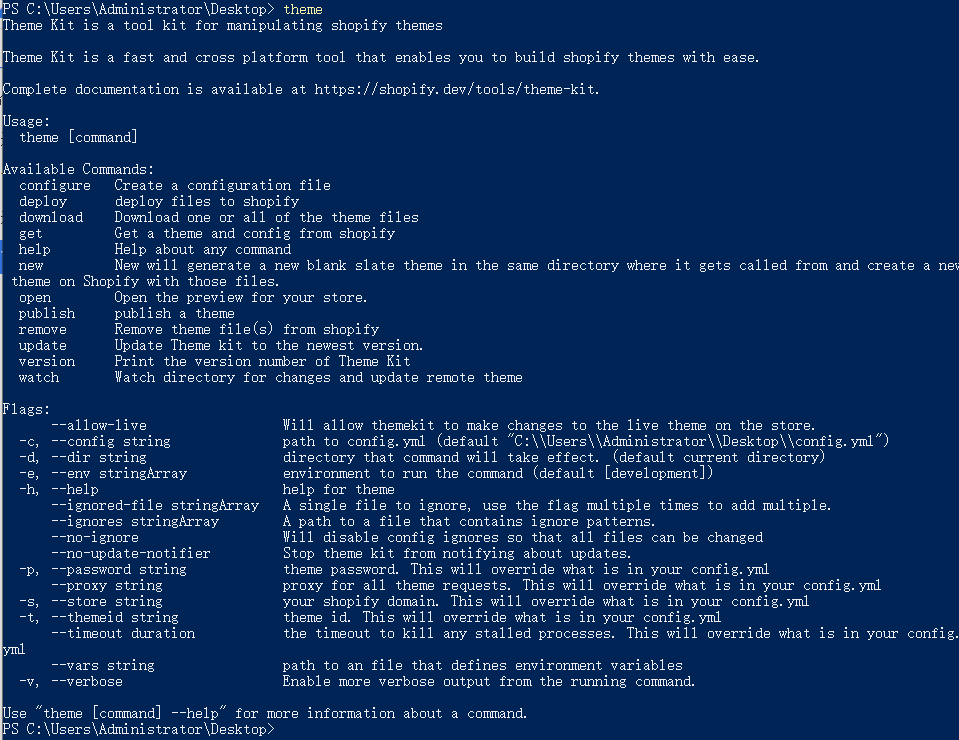

获取主题列表
$ theme get --list --password=[your-password] --store=[your-store.myshopify.com]
下载主题到本地
$ mkdir [your-theme-name]
$ cd [your-theme-name]
$ theme get -p=[your-password] -s=[your-store.myshopify.com] -t=[your-theme-id]
创建一个新主题
$ theme new --password=[your-password] --store=[your-store.myshopify.com] --name=[theme name]
实时更新主题
$ theme watch
更多主题命令，可在powershell环境下运行"theme"命令查看
theme
